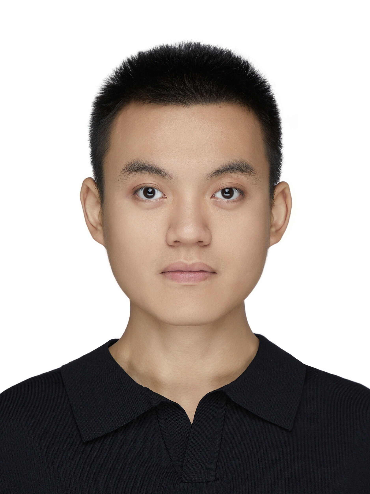

北京大学人工智能研究院硕士（推荐免试）·外国语言学及应用语言学
2026.09 –
- 北大 × 字节跳动数字人文开放实验室（PKUDH）·导师：苏祺 长聘副教授
+86 177 1399 9172·yiranrexma@outlook.com·yiranrexma.monticule.tech
基础语言模型 · 持续学习 ｜ Qwen · 面壁垂域基座经验

Yiran Rex Ma, Yuxiao Ye, and Huiyuan Xie. CLASE: A Hybrid Method for Chinese Legalese Stylistic Evaluation. LREC 2026.
Yuxiao Ye, Yiran Rex Ma*, Yiming Zhang*, Huiyuan Xie, Huining Zhu, and Zhiyuan Liu. LinguaGame: A Linguistically Grounded Game-Theoretic Paradigm for Multi-Agent Dialogue Generation. ACL 2026.
Yiran Rex Ma, Shan Huang, Yuting Xu, Ziyu Zhou, and Yuanxi Wei. Pun2Pun: Benchmarking LLMs on Textual-Visual Chinese-English Pun Translation via Pragmatics Model and Linguistic Reasoning. ACL 2025.
Yiran Rex Ma. Do Androids Question Electric Sheep? A Multi-Agent Cognitive Simulation of Philosophical Reflection on Hybrid Table Reasoning. ACL 2025.
Yiran Rex Ma. PanelTR: Zero-Shot Table Reasoning Framework Through Multi-Agent Scientific Discussion. IJCNN 2025.
李霜洁, 马义然, 孙茂松, 刘知远. 基于图结构和深度学习的古文字识别/缺损字形重建方法和装置: CN202510989823.X/9824.4.
+86 177 1399 9172·yiranrexma@outlook.com·yiranrexma.monticule.tech
Foundation language models & continual learning | Domain foundation model experience with Qwen & ModelBest
Yiran Rex Ma, Yuxiao Ye, and Huiyuan Xie. CLASE: A Hybrid Method for Chinese Legalese Stylistic Evaluation. LREC 2026.
Yuxiao Ye, Yiran Rex Ma*, Yiming Zhang*, Huiyuan Xie, Huining Zhu, and Zhiyuan Liu. LinguaGame: A Linguistically Grounded Game-Theoretic Paradigm for Multi-Agent Dialogue Generation. ACL 2026.
Yiran Rex Ma, Shan Huang, Yuting Xu, Ziyu Zhou, and Yuanxi Wei. Pun2Pun: Benchmarking LLMs on Textual-Visual Chinese-English Pun Translation via Pragmatics Model and Linguistic Reasoning. ACL 2025.
Yiran Rex Ma. Do Androids Question Electric Sheep? A Multi-Agent Cognitive Simulation of Philosophical Reflection on Hybrid Table Reasoning. ACL 2025.
Yiran Rex Ma. PanelTR: Zero-Shot Table Reasoning Framework Through Multi-Agent Scientific Discussion. IJCNN 2025.
Shuangjie Li, Yiran Rex Ma, Maosong Sun, and Zhiyuan Liu. Method and Apparatus for Recognizing Ancient Scripts and Reconstructing Damaged Glyphs Based on Graph Structure and Deep Learning. CN202510989823.X/9824.4 (Invention Patent).